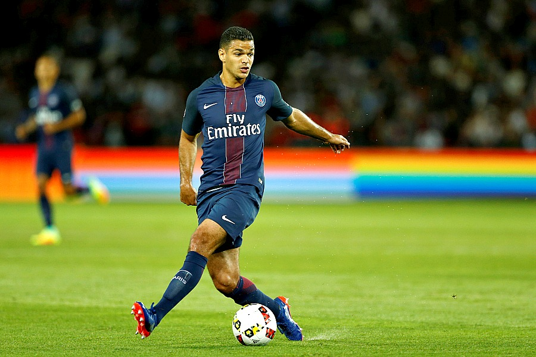
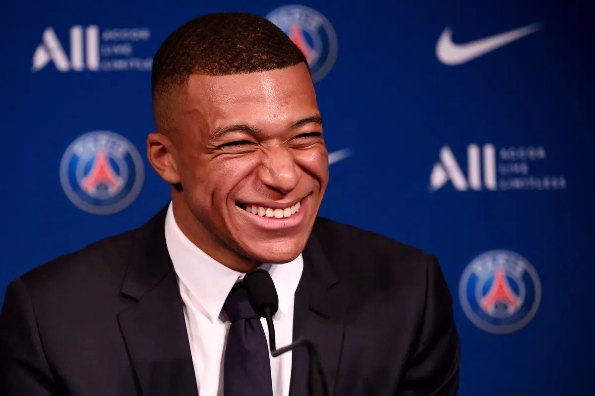
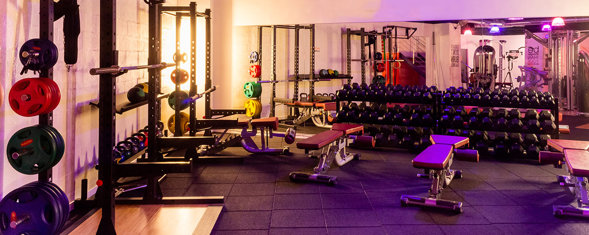
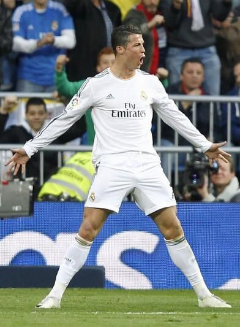
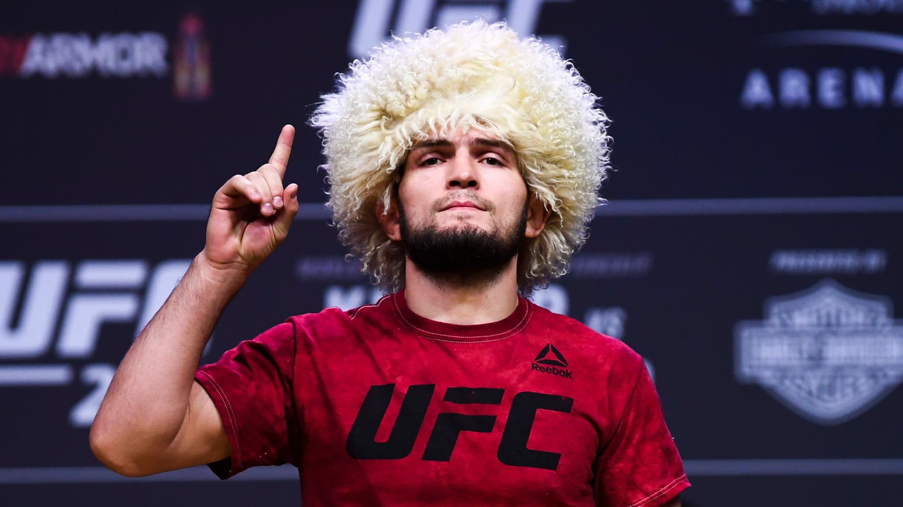
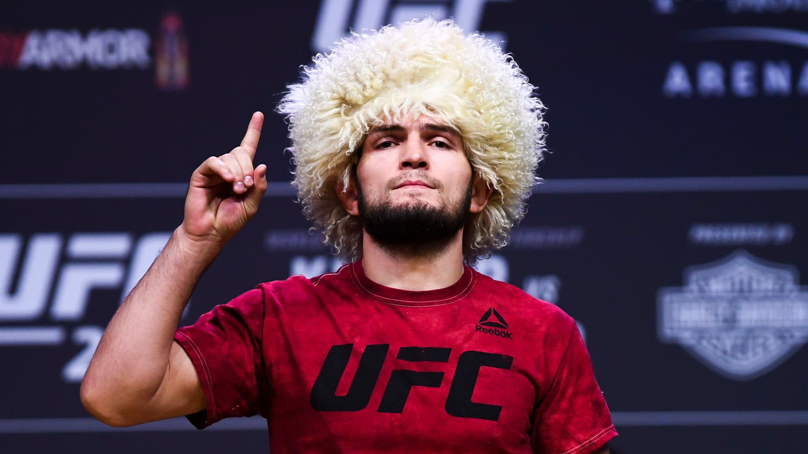
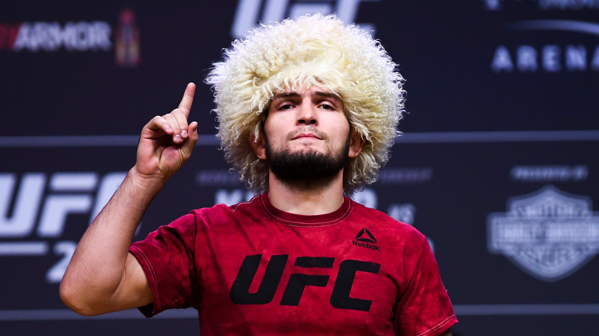

Divers :
Je joue au football inspiré par Ben Arfa, Killian Mbappé et Cristiano Ronaldo
 
Je pratique activement de la musculation en salle

Je m'intéresse fortement à tout ce qui tourne autour des sports de combats mais principalements : le MMA, la Boxe anglaise et le Jiu-jitsu brésilien
Mes combattants favories sont :
Cedric Doumbé et Khabib Nurmagomedov

 

